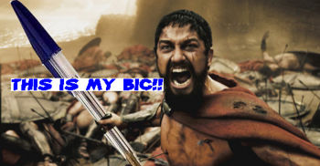

Carreras de boligrafos
 De: La Frikipedia, la enciclopedia extremadamente seria.
De: La Frikipedia, la enciclopedia extremadamente seria.
| De la serie artes del mundo:
|
| Carreras de boligrafos
|
|
|
| Uno de los instrumentos necesarios para la practica de este tipo de carreras
|
|
| Se practica desde...
|
que los alumnos se empezaron a aburrir en clase
|
| Practicantes típicos
|
adolescentes en epoca de estudios
|
| Técnicas básicas
|
velocidad y resistencia
|
| Público objetivo
|
más alumnos aburridos
|
| Dificultad
|
facil
|
| Nivel de frikismo
|
alto
|
| Máximo exponente
|
homer j. simpson
|
Deporte olímpico en el que dos deportistas luchan por darle más veces al botón de sus bolígrafos.
Tipos de carreras
Hay dos tipos de carreras:
- De velocidad.
- De resistencia.
Velocidad
En este tipo de carreras los deportistas intentan darle al botón de sus boligrafos todas las veces que puedan, para medir el número de veces en el que a sido pulsado un botón se utiliza el bolímetro.
Resistencia
En este tipo de carreras los deportistas intentan aguantar más que su oponente, en este caso lo que se utiliza para medir la puntuación es el cronómetro.
Categorías
Velocidad
- Noob: Entran en esta categoría los que logran 0.5 presiones de bolígrafo por segundo. Por lo general se mueren de hambre, pues no ganan mucho dinero.
- Novato: Entran en esta categoría los que logran 1 presión de bolígrafo por segundo. No llegan mas lejos que eso, pero hacen el intento...
- Intermedio-noob: Están al borde de nivel intermedio, con 1.5 presiones por segundo. Carecen de habilidad para los videojuegos en que te hacen presionar el botón A muchas veces seguidas.
- Intermedio: Entran aquí los de 2 presiones por segundo. Su entrenamiento generalmente consiste en hacer eso.
- Intermedio-experto: Hacen 3-4 presiones por segundo. Por lo general tuvieron un trauma en la niñez.
- Experto: Hacen 5-8 presiones por segundo. Admirables, pero ociosos.
- Profesional: Entran aquí los que hacen 9-16 presiones por segundo y/o que padecen de parkinson.
Resistencia
- Mierdas: Aquí estan los que duran entre 0 y 15 segundos a velocidad lenta, esto ocurre porque no estan acostumbrados a la practica de este deporte.
- Noob: Aquí estan los que duran entre 15 y 30 seg. a velocidad lenta no duran más porque se dan cuenta de que si se cansan luego no van a poder hacerse una paja.
- Intermedio: Estos duran entre 30 seg. y 2 min. (2 min. y 7 seg. con mucha suerte). Este tipo de deportistas llaman la atención porque pese a no ser profesionales practican el deporte a velocidad rapida.
- Experto: Estos superan los 20 min. en un día normal y llegan a 30 min. en sus dias de suerte, ademas acen las pulsaciones a velocidad rapida.
- Profesional: Aquí entra cualquier persona que supere los 30 min. seguidos de la practica del deporte a velocidad rapida.
- Friki: De nuevo en esta categoría solo ha logrado entrar homer.
Bolituning
¿Qué es?
Es el arte de "tunear" los boligrafos que en un futuro competirán en carreras de bolígrafos.
A los autores de estas fantásticas obras de arte les llamaremos gilipollas "bolituners".
Elementos indispensables del bolituning
Puedes pensar que para tunear tus bolis solo necesitas imaginación, pues bueno, si piensas eso estas equivocado ya que necesitaras los siguientes elementos:
- Un boligrafo (elemento muy importante ya que es la base del proyeto.
- Tipex (para poder quitarle a tu boligrafo los colorines que no te gusten).
- Más boligrafos (para poder poner tu nombre frikipedico encima del tipex.
- Una mano (elemento importante para poder sujetar el boligrafo, para usar el tipex etc...) (mejor si consigues dos manos).
- Un pie (para poder destrozar el boligrafo en caso de que este no nos quede como esperabamos).
- Imaginación (antes he dicho que no es lo único que necesitamos, pero con ello no quiero decir que no sirva para nada).
- Un pupitre (para apoyarnos).
- Pulso (para que no se nos escape el tipex y manchemos todo el pupitre).
- Alerones (como que ¿para que?, pues para ponerlos en el boligrafo).
- Pegatinas tuning (en escala 1:50 o cualquier medida que entre en el boligrafo).
 El rey de esparta con su querido boligrafo de competición
Gente que tiene boligrafos tuneados
Formas de ganar a tu contrincante
La mejor manera
Mientras estas en una carrera empieza a hablar con tu contrincante, empieza diciendole que eres el rey de las carreras de boligrafos o alguna otra cosa para dejarle claro quien va a ser el ganador.
Despues de un rato raspandole con cosas para que se enfade te dira que te calles de una puta vez, así que cállate.
Espera un poco más y dile:
- Esto es una rallada, ¡Lo dejo!
Entonces el dirá:
- Eso pienso yo, esto es perder el tiempo.
Y parará de darle al botón, por lo tanto: ¡Habrás ganado!
Otras maneras
- Ten un bolígrafo mejor tuneado que tu contrincante.
- Ser yo.
- Ser tu (pero con un poco más practica en esto de
las pajas las carreras de boligrafos).
- Si no puedes ser ninguno de los anteriormente nombrados pidele ayuda a homer.
Autor(es):
- Frikiman
- El Sevillano
- Yo soy tu padre ya existe asi que me llamo tu padre soy yo
- Paround
- Arbosa
- MsSoraku
- Soy YO
- AztroCat01
Frikipedia 2005-2016, Licencia
GFDL 1.2 - Extraído por FrikiLeaks